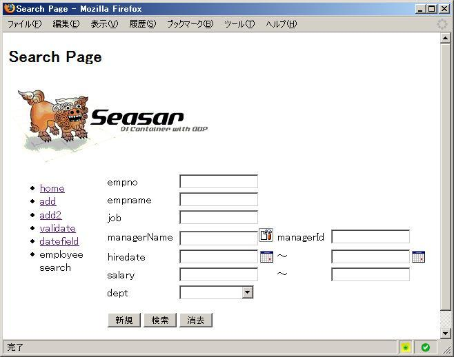
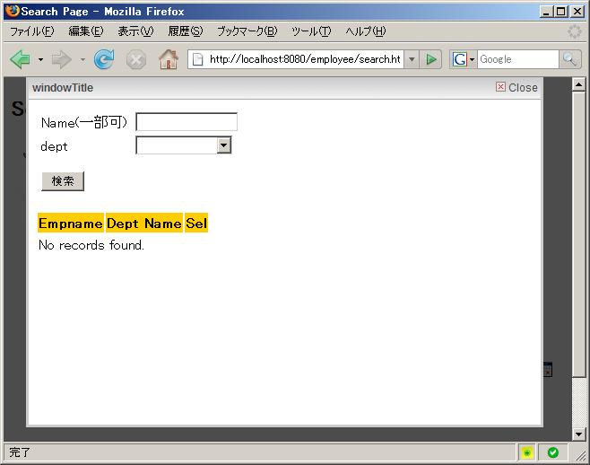

-
- それでは、S2JSF ExampleのEmployeeを少し変形した、S2Click版 Employeeサンプルを見てみましょう
- 最初に表示されるのは、下記の様な検索条件設定画面です。また新たなレコードの追加の場合は、「新規」ボタンをおすことで、Edit画面を開く事ができます。
- またこの検索条件のDtoは、Sessionに保存されますので、この画面を再度開くと前回の条件が表示されますので、それらの条件を消す場合は「消去」ボタンをおすことで、ブラウザのJava Scriptで消すことが出来ます。

- このページもAdd2 Exampleと同様にFormに表示するTableのColumnを設定しており、この場合は２に設定してあります。/dd>
- この画面に条件を入力後「検索」ボタンをおすと、画面の条件をDtoに設定して、そのDtoをSessionに保存後List画面にRedirectします。
- それでは、S2Clickの最初のページでも紹介しましたが、Managerの検索をGreyBoxを使用して行うのを容易にする、TextFieldSelectId Controlについて説明します。これは、検索した結果のIdとTextを同時に取得するもので、Textのみ取得する TextFieldSelect ControlをExtendしています。
- TextFieldSelectの ソースコードは下記の通りです。
public class TextFieldSelect extends TextField {
protected static final String HTML_IMPORTS =
"<link type=\"text/css\" rel=\"stylesheet\" href=\"{0}/click/greybox/greybox.css\"/> \n"
+ "<script type=\"text/javascript\" src=\"{0}/click/greybox/AJS_compressed.js\"> </script> \n"
+ "<script type=\"text/javascript\" src=\"{0}/click/greybox/greybox_compressed.js\"> </script> \n"
+ "<script type=\"text/javascript\" src=\"{0}/click/greybox/setfields.js\"> </script> \n";
protected static final String[] GREYBOX_RESOURCES =
{ "AJS_compressed.js", "blank.gif", "blank.html", "close.gif",
"greybox_compressed.js", "greybox_nav_compressed.js", "greybox.css",
"header_bg.gif", "indicator.gif", "loader_frame.html",
"next.gif", "overlay_dark.png", "overlay_light.png", "prev.gif",
"edit-button.gif"};
protected Image image = new Image();
public TextFieldSelect(){
}
TextFieldSelect(String name, boolean required){
super(name, required);
}
public TextFieldSelect(String name, String label) {
super(name, label);
}
public TextFieldSelect(String name, String label, boolean required) {
super(name, label,required);
}
public TextFieldSelect(String name, String label, int size) {
super(name, label, size);
}
public void setImageSrc(String src) {
image.setSrc(src);
}
public void setSelectPage(String windowTitle, String path)
{
image.setAttribute("onclick","S2C_SHOW_URL('"+getId()+"','"+"windowTitle"+"','"+ path + "')");
}
@Override
public String toString() {
Utility.copyGrayboxJs(getForm().getContext());
return super.toString() + imageToString();
}
private String imageToString(){
if (image.getName()==null){
image.setName(getName()+"_s2img");
}
if (image.getSrc() == null){
image.setSrc(getContext().getRequest().getContextPath()+
"/click/greybox/edit-button.gif");
}
return image.toString();
}
public void onDeploy(ServletContext servletContext) {
for (int i = 0; i < GREYBOX_RESOURCES.length; i++) {
String greyboxFilename = GREYBOX_RESOURCES[i];
String greyboxResource =
"/org/seasar/s2click/control/greybox/" + greyboxFilename;
ClickUtils.deployFile(servletContext,
greyboxResource,
"click/greybox");
}
Utility.removeGrayboxJs(servletContext);
}
public String getHtmlImports() {
String[] args = {
getContext().getRequest().getContextPath()
};
return MessageFormat.format(HTML_IMPORTS, args);
}
}
- Click.xmlの「コントロール」定義をしておくことにより、Click Servlet起動時にOnDeploy Methodが呼ばれますので、ここで、JavaScript Fileを clickのフォルダーにコピーします。但し既に同名のファイルがある場合は上書きされませんので、TESTの場合など設定内容を変更した場合は、clickのフォルダー毎削除するか、当該ファイルを削除しないと変更が有効になりません。
- また、HTML_IMPORTSに設定した内容が、HTMLの$importsに自動的に展開されますので、このControlで新たに必要になるJava ScriptやCSSを設定します。
- この様に、Java Scriptと連携するControlが容易に作成できる事が判って頂けるとおもいます。
- なお、setfields.jsの内部に、greyboxのImage Pathを設定するのですが、現在のServletの使用では、ServletContextからContext Pathが取得できないので、止むを得ず最初のRendering時に、Utility#copyGrayboxJs Methodでコピーするちょっとトリッキーな方法で仕方なく対応しました。
-
まず、textSelect 変数を定義します。
private TextFieldSelectId textSelect =
new TextFieldSelectId("managerName","managerName");
コンストラクタの中で、formにこの変数を代入します。
form.add(textSelect);
onInit メソッドで、ManagerのIｄを定義したFieldを設定すると共に、Manager 検索画面の設定をします。
public void onInit(){
textSelect.setIdField(manageid);
textSelect.setSelectPage("ManagerSelect",
Utility.getFullPagePath(this, ManagerSelectPage.class));
．．．．．
}
- 上記の設定により、クリックすると ManagerSelect画面が、GrayBoxの内部に表示されます。

-
- ここでは、検索結果を呼び出した画面に埋め込む ImageDataSetParentId Controlについて説明します。これは、検索した結果のIdとTextを同時に埋め込むもので、Textのみを埋め込む ImageDataSetParent ControlをExtendしています。
- ImageDataSetParentId Controlは、上記で説明したTextFieldSelectId Control同様、Java Scriptを使用して、親画面に設定して自分をCloseします
まず、imgSet 変数を定義します。
private ImageDataSetParentId imgSet = new ImageDataSetParentId("img");
ここでは、検索された結果は FormではなくTableとして（$table）HTML ファイルにレンダリングされます。
コンストラクタの中に、TableのColumnとして、「Sel」列を設定し、Decorator機能を使用して、MangerのIdを
ImageDataSetParentId Componentに設定しています。
Column column = new Column("Sel");
column.setDecorator(new Decorator() {
public String render(Object row, Context context) {
Employee employee = (Employee) row;
imgSet.setContext(table.getContext());
imgSet.setData(employee.getEmpname(),employee.getId().toString());
return imgSet.toString();
}
});
- このTableの設定が容易なのに、高機能な点は Clickの特筆すべけ特徴だと思います
|